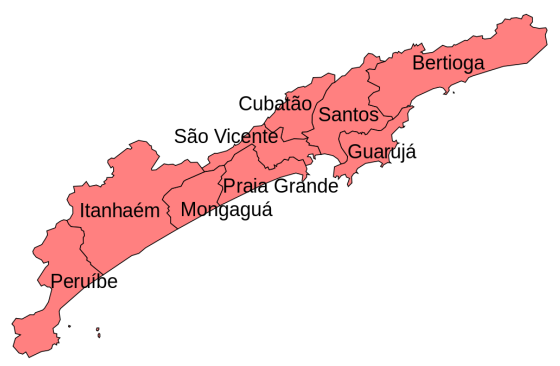
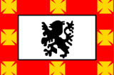
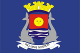
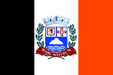
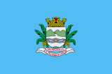
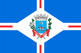
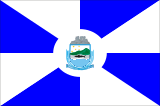

Nove municípios.
A Baixada Santista é uma região localizada no litoral do estado de São Paulo, Brasil, que abrange nove municípios: Santos, São Vicente, Guarujá, Praia Grande, Mongaguá, Itanhaém, Peruíbe, Bertioga e Cubatão. Com uma população de mais de 1,8 milhão de habitantes, é uma das regiões mais populosas do estado.
A Baixada Santista é uma região turística muito conhecida e procurada, especialmente durante o verão, por suas belas praias, excelente infraestrutura e diversas opções de lazer e entretenimento. Além disso, a região possui um importante porto, que é responsável por grande parte do comércio exterior do país, sendo uma importante fonte de renda e desenvolvimento econômico para a região.






